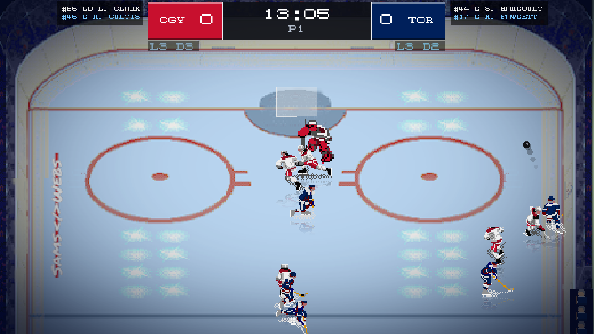
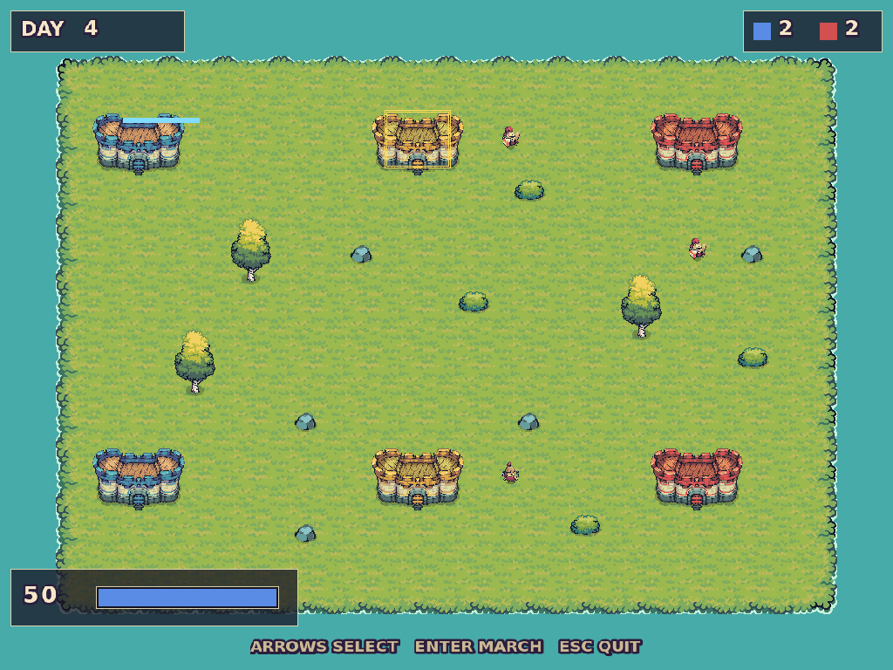
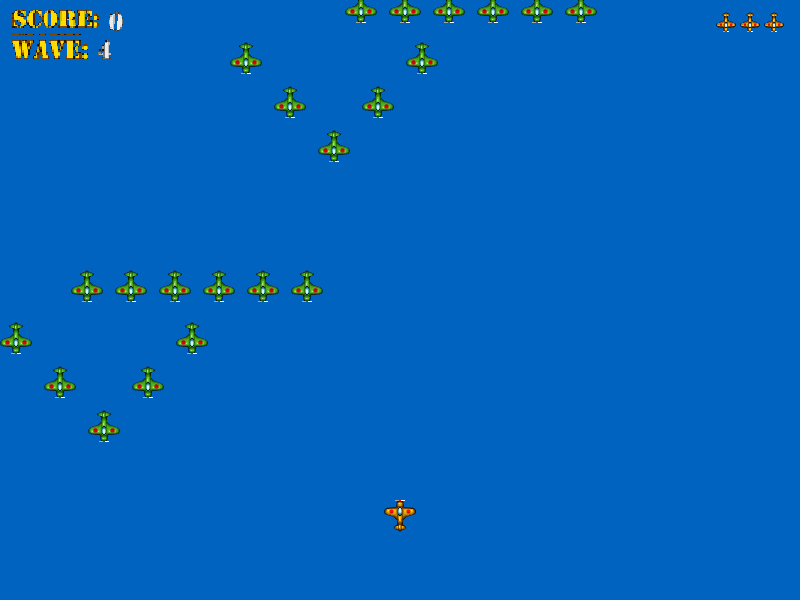
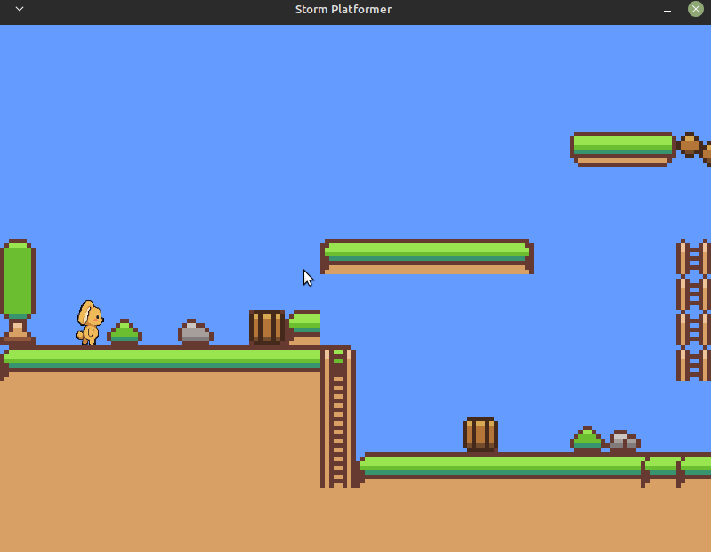
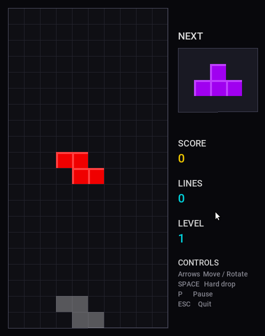
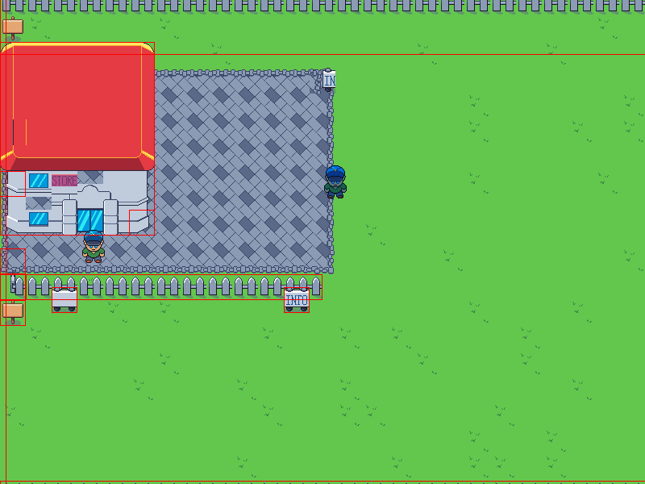
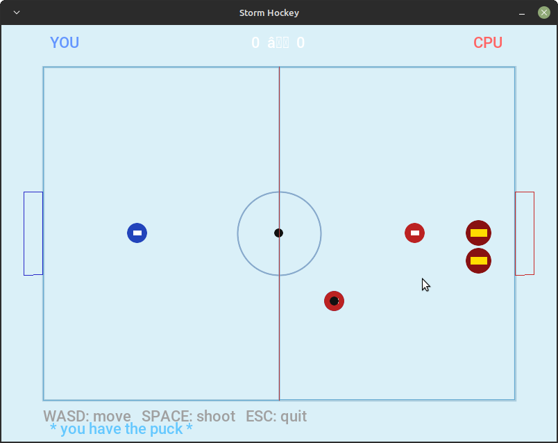
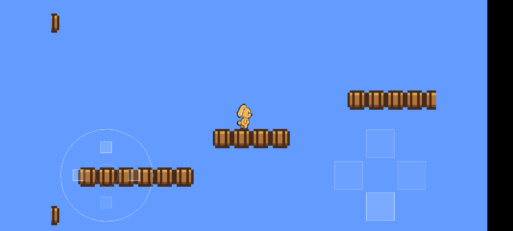
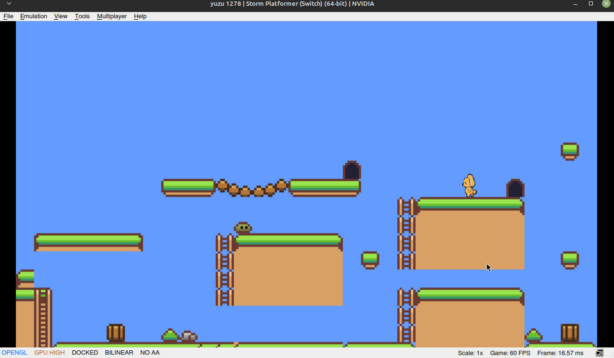

Platformer
Platformer
Tilemap loading, tile-based physics with gravity and AABB resolution, and a scrolling camera.
Inspired by Gustavo Pezzi's C++ Game Engine Programming course, Storm! Engine v2 is a small, ECS-based 2D engine on SDL2. Nine complete games ship with it - read them, change them, break them, and keep what you learn when you move on. You download, you own it.
# Native Debian-based Linux package
sudo apt install ./libstormenginev2_2.2.0_amd64.deb
Download Linux, Raspberry PI, or Windows packages from the Releases page.

What you are actually learning
There is no scripting layer and no editor generating code behind your back. You write C++, you call into SDL2 when you want to, and the engine's own source is there to read when you want to know how a piece works. Everything lives under namespace storm, so it never collides with your own Entity or Logger.
An entity is an id; behaviour comes from the components you attach. A std::bitset signature gives 64 component types per binary - the engine spends five of them, leaving 59 for your game. Ids come from one process-wide counter, so the budget is per binary, not per Registry.
Contact{a, b, normal, depth} with begin and end callbacks, and a pair filter - which is where layers, masks and sensors live. Overlap is strict: a shared edge is not a contact.
Bind a game action across keyboard, gamepad, virtual gamepad and touch at once, and get one edge per action rather than four. Added in 2.0.0.
Every subsystem is demonstrated by something you can actually play. The platformer teaches tilemap loading, tile-based physics and a scrolling camera. 1945 teaches a three-state stack, high entity churn and controller input. Realms teaches a pushed state - a side-on battle runs over a campaign map that is still alive underneath it.

UDP host and join with reliable and unreliable chunks, kick, ban and timeout, and snapshot replication with per-client deltas and a prediction cache. Three networking demos come with it: netchat, netrepl and a playable netplay-checkers.

A built-in tile map editor with drag-to-paint, drag-to-erase and layer support. Maps save as .map and the loader auto-detects the format, so there is no export step between painting a level and running it.

Take one piece at a time
You do not have to adopt an architecture to get started. <stormengine2/collision/shapes.h> includes glm and nothing else, so a program with no Registry, no entities and no components can still use it. Adopting the ECS is a choice about the broadphase, not a precondition for the geometry.
#include <stormengine2/collision/shapes.h> using namespace storm; ContactCircle puck{x, y, 3.0f}; ContactAABB post{px0, py0, px1, py1}; glm::vec2 normal; float depth; if (Manifold(puck, post, normal, depth)) { // normal runs from the puck INTO the post; depth is how far they overlap. // Applying MinimumTranslation(normal, depth) to the POST separates them -- // or negate it and apply it to the puck. }
Boxes and circles are supported in every combination. Circles matter for anything round - a puck kept off the boards by its edge, characters pushed apart by a separation radius, a shot glancing off a post. A circle against a box corner produces a diagonal normal; approximating it with a box would snap that to an axis and change how the game feels.
Worked examples
Not fragments - nine games you can build, run and take apart. Each is written against the same public API you get, with no engine forks and no private headers, so anything you see in an example you can do in your own project. Start with the platformer, then read the one closest to the game you want to make.
Tilemap loading, tile-based physics with gravity and AABB resolution, and a scrolling camera.
A three-state stack, high entity churn with deferred lifecycle, one-shot animations and an immediate-mode HUD.
A campaign map with a pushed side-on massbattle, a shared campaign model and a 64px tilemap.

Custom components and systems, entity reuse, deferred lifecycle and text from the engine's cached fonts.

Tile-based world loading, NPC interaction and Final Fantasy-style typewriter dialogue.

AI behaviour, puck physics and custom systems - the case the circle colliders were built for.

Engine and game compiled to a single JNI library via the NDK, with the virtual gamepad replacing the keyboard.

Builds with devkitPro and produces an .nro that runs on a homebrew-enabled console or an emulator.
Get started
Every release attaches Debian packages for amd64 and arm64 - including Raspberry Pi 4 and 5 on a 64-bit OS - and a Windows SDK zip.
sudo apt install ./libstormenginev2_2.2.0_amd64.deb
unzip stormengine2-2.2.0-win64.zip
No installer. Unzip it, build with -Iinclude -Llib -lstormenginev2, and copy bin\ beside your .exe. MSVC is not supported — the ABI is GCC's.
SDL2 and its extensions, glm, tinyxml2 and GTK for the editor.
sudo apt update && sudo apt install -y \
libsdl2-dev libsdl2-image-dev \
libsdl2-ttf-dev libsdl2-mixer-dev \
libglm-dev libtinyxml2-dev libgtk-3-dev
.deb
Windows - MinGW-w64 cross-build from Linux
Nintendo Switch - source builds, devkitPro
Android - source builds, verified on hardware
iOS - possible via the same SDL layer
Windows is cross-compiled from Linux with mingw-w64 - no Windows toolchain needed, and SDL2 is built from the same vendored sources the Android build uses, so nothing is downloaded. The library, the spec suite and seven of the examples cross-build today, and every release attaches a Windows SDK zip. A native toolchain that runs in cmd or PowerShell is not supported - the import library and the C++ ABI are GCC's, so MSVC cannot link it. WSL2 runs the plain Linux build.
Storm! Engine v2 is free under the WTFPL and always will be. If it taught you something, a coffee helps keep the examples growing.
v2.0.0 resets the 1.x API freeze: ten breaking changes land together so the traps they fix are gone for good rather than arriving one per release. It is a rebuild, not a relink - four structs changed size, and MAX_COMPONENTS changed meaning without changing size at all. Read the upgrade guide →